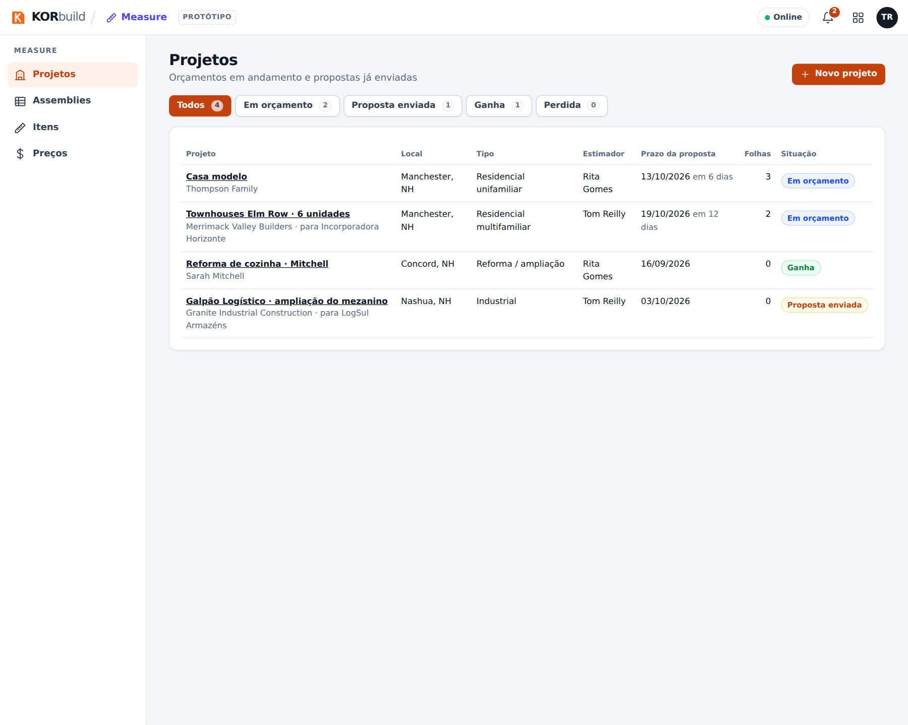

O Measure é a medição de plantas (takeoff) da prestadora: abra as plantas em PDF no navegador, defina a escala, meça paredes, pisos, siding, janelas e portas com o mouse, e o KORbuild transforma as medições em materiais e horas de mão de obra pelos assemblies. A partir daí, ele monta a lista para cotação dos fornecedores e a proposta para o cliente.
O Measure é das empresas que executam (prestadoras). A construtora não abre os desenhos no Measure; ela recebe a proposta. Veja Como o KORbuild se organiza.
Por que importa
- Pés e polegadas, do jeito que o orçamentista trabalha. Todo comprimento aparece como
12'-6 1/2"e toda área em sq ft; dá para digitar as medidas do mesmo jeito. Por trás, o KORbuild guarda números exatos, então o zoom e o tamanho da tela nunca mudam uma medida. - Mede uma vez, sai tudo. Uma parede medida uma vez gera montantes, guias, OSB, house wrap, isolamento, drywall e as horas de carpinteiro. Conte mais uma janela e o OSB, o drywall e o siding já levam isso em conta.
- Todo número se explica. Cada material mostra a conta por trás: qual condição, qual fórmula, a perda e o arredondamento. Nenhum número escondido.
- Da medição à proposta, no mesmo lugar. As quantidades viram a lista para cotação (sem preços) e a proposta, com o preço do seu catálogo e das suas margens.
Quem usa
| Quem | Onde | O que faz |
|---|---|---|
| Orçamentista (administrador, gestor de obras) | Computador | Cria projetos, envia plantas, mede, confere materiais e horas, pede cotações, monta e emite propostas. |
| Dono / administrador | Computador | Também cuida do catálogo: itens, assemblies com fórmulas, preços e margens. |
| Fornecedor | Recebe a lista para cotação (sem preços, sem mão de obra) e responde com os preços. Não é usuário. | |
| Cliente (construtora ou dono) | E-mail / PDF | Recebe a proposta. Não é usuário. |
Medir exige mouse e tela grande: o Measure é usado no computador.
As telas principais
| Tela | O que mostra |
|---|---|
| Projetos | Cada orçamento com cliente, local, tipo, estimador, prazo da proposta (com alertas) e situação: Em orçamento, Proposta enviada, Ganha, Perdida. |
| Projeto | Os dados do projeto, as folhas (com a situação da escala), as quantidades por condição, os typicals e os materiais e mão de obra. Links para a lista para cotação e a proposta. |
| Folha (visor) | A planta em tela cheia, as condições à esquerda, a barra de ferramentas (Mover, Medir, Recortar, Vão, Typical, escala, zoom). |
| Itens | O catálogo do que se compra ou se paga, na unidade de compra, com a etapa (cost code). |
| Assemblies | Grupos de itens com fórmulas, aplicados ao que é medido. |
| Preços | O custo atual de cada item, com vigência, e as margens (overhead e lucro). |
| Lista para cotação | Os materiais por fornecedor, na unidade de compra, prontos para mandar por e-mail. |
| Proposta | Uma linha por etapa, com o preço do catálogo e das margens, emitida como PDF numerado. |


O caminho de um orçamento
| Passo | O que acontece |
|---|---|
| 1. Projeto | Crie com cliente, local e prazo da proposta. |
| 2. Plantas | Envie o PDF: cada página vira uma folha. |
| 3. Escala | Escolha a escala na lista (ou calibre por uma cota) e confira em outra cota. |
| 4. Incluir assemblies | Escolha o que vai medir nesta folha (paredes externas, piso, siding, janelas…). |
| 5. Medir | Clique na planta: linhas, áreas, contagens. Desconte vãos e recortes. |
| 6. Materiais e mão de obra | Calculados pelos assemblies, com a conta à vista. |
| 7. Cotações | Mande a cada fornecedor a lista dele; registre os preços que voltarem. |
| 8. Proposta | Com preço linha a linha; emita, numerada e congelada; o projeto passa para Proposta enviada. |
| 9. Ganha | O projeto ganho pode virar uma obra, pronta para o Daily, o Crew e o cronograma. |
Ligado aos outros módulos
- Obras: um projeto ganho pode criar a obra (Criar obra a partir deste projeto), com o cliente e o endereço já preenchidos.
- Crew: o custo da hora de mão de obra pode vir dos valores hora e dos encargos dos seus funcionários.
- Em seguida: as horas estimadas por etapa virando o orçamento de mão de obra da obra no Crew, e as quantidades alimentando o avanço no Daily.